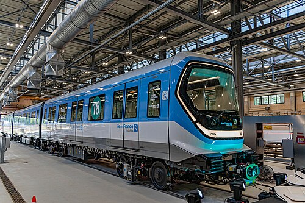
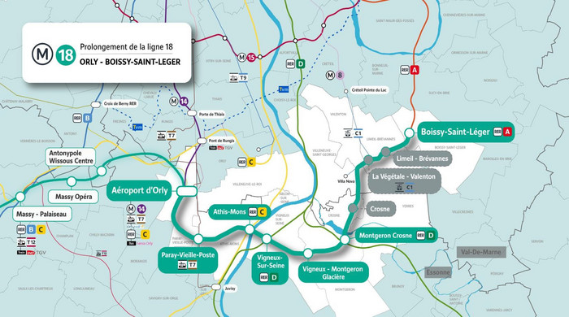

La ligne 18 du métro de Paris est une ligne en construction du réseau métropolitain de Paris. Il s'agit d'une ligne
de métro automatique à gabarit adapté du Grand Paris Express. Longue de 35 kilomètres, elle reliera dans un premier
temps l'aéroport d'Orly à Versailles via la gare de Massy - Palaiseau, le plateau de Saclay et Saint-Quentin-en-Yvelines,
son parcours empruntant un long tunnel creusé entre Orly et Massy-Palaiseau puis un viaduc long de 6,7 km entre
Palaiseau et le CEA de Saint-Aubin sur le plateau de Saclay. Après un passage au sol, un nouveau tunnel l'emmène
jusqu'à la gare de Versailles-Chantiers.
Elle devrait être achevée après 2030. Sa première section,
de Massy - Palaiseau au plateau de Saclay (Christ de Saclay) est prévue pour octobre 2026, puis pour 2027
entre la gare de Massy - Palaiseau et l'aéroport d'Orly et pour 2030 de Christ de Saclay à Versailles Chantiers.
L'une de ses vocations est notamment de desservir le pôle technologique et scientifique Paris-Saclay et l'université
Paris-Saclay. Elle aurait également dû donner accès au site qui était envisagé pour le projet avorté de candidature
française à l'organisation de l'Exposition universelle de 2025.
La maîtrise d'œuvre de l'ingénierie et des stations
a été confiée au groupement Icare, emmené par Ingérop Conseil et Ingénierie, Artelia Ville et Structure et
Arcadis ESG, avec plusieurs cabinets d’architecture pour les différentes stations du tronçon tandis que les systèmes
sont sous la responsabilité de Egis Rail. Le viaduc et les stations aériennes sont confiés au groupement Benthem
Crouwel.
C'est la seule ligne de métro du Grand Paris Express (et du réseau de métro parisien en général) qui
dessert le département des Yvelines avec trois stations dans deux communes : la station de Versailles Chantiers et
celle de Satory sont situées à Versailles et la station de Guyancourt est située à Guyancourt.
Matériel roulant :
Contrairement aux autres lignes du Grand Paris Express, la ligne 18 dispose de son propre matériel roulant spécifique avec le MRV. Il s'agit d'un matériel à roulement fer et à conduite automatique constitué de trois voitures à intercirculation intégrale. Les rames seront alimentées par troisième rail en 1 500 V. Sa vitesse maximale commerciale est de 100 kilomètres par heure. Il possède un gabarit de 2,50 m, proche du gabarit historique de 2,40 m des lignes du métro parisien. La capacité d'un train complet est de 498 places dont 54 places assises.
Projets envisagés :
Trois projets sont envisagés sur l'ensemble de la ligne 18 :
- La création d'une nouvelle gare entre les arrêts Massy-Palaiseau et Polytechnique, à l'endroit où la ligne émerge du sol
pour passer en aérien.
La DUP modificative mise à l'enquête du 15 juin au 17 juillet 2020 prend en compte cette recommandation en modifiant le profil de la ligne dans le secteur de Palaiseau. Un palier de 100 m de long est ainsi prévu entre l'émergence du tunnel et le viaduc afin de permettre la construction d'une future station. En avril 2023, dans le cadre du schéma directeur de la région Île-de-France pour 2040, la région Île-de-France propose la réalisation de la station. - Un prolongement de la ligne au nord entre Versailles-Chantiers et Nanterre-la-Folie.
Ce projet, prévu dans le schéma d'ensemble du Grand Paris Express, est alors incertain. Cependant, en février 2023, la Société du Grand Paris relance les études pour ce prolongement dans le cadre de la préparation des chantiers des stations Nanterre La Folie et Versailles Chantiers. En avril, dans le cadre du schéma directeur de la région Île-de-France (SDRIF) pour 2040, la région confirme la réalisation de cette section et propose l'ajout de plusieurs stations intermédiaires.
En avril 2024, un tracé est étudié par la Société des Grand Projets. Il comporte quatre stations : Le Chesnay-Rocquencourt, La Celle-Saint-Cloud, Rueil-Centre et Nanterre-la-Folie. - Un prolongement de la ligne à l'est entre Aéroport d'Orly et Boissy-Saint-Léger.
En 2016, la Société du Grand Paris annonce la mise en place de mesures conservatoires à la station Aéroport d'Orly afin de permettre une éventuelle extension à l'est de la ligne 18 au-delà de 2030. Cette décision répond aux demandes d'élus proposant un prolongement jusqu'à la gare de Boissy-Saint-Léger (RER A) via Villa Nova (correspondance avec Câble 1), pour les mêmes raisons. Le département du Val-de-Marne, par l'intermédiaire de l'association Orbival, mobilise les élus pour étudier ce prolongement.
En avril 2023, dans le cadre du schéma directeur de la région Île-de-France (SDRIF) pour 2040, la région propose, en complément de la section Versailles–Nanterre, un prolongement de la ligne 18 jusqu'à Montgeron (RER D) et Boissy-Saint-Léger (RER A). En juin 2025, les résultats des études de faisabilité sont présentés. Ils proposent un prolongement de la ligne 18 vers l'est avec neuf stations supplémentaires à l'horizon 2040. Cette extension, entièrement souterraine, s'étendrait sur 17 km pour un coût estimé à 2,93 milliards d'euros. Elle comporte donc neuf stations : Paray-Vieille-Poste, Athis-Mons, Vigneux-sur-Seine, Vigneux-Montgeron Glacière, Montgeron-Crosne, Crosne, La Végétale/Valenton, Limeil-Brévannes et Boissy-Saint-Léger.